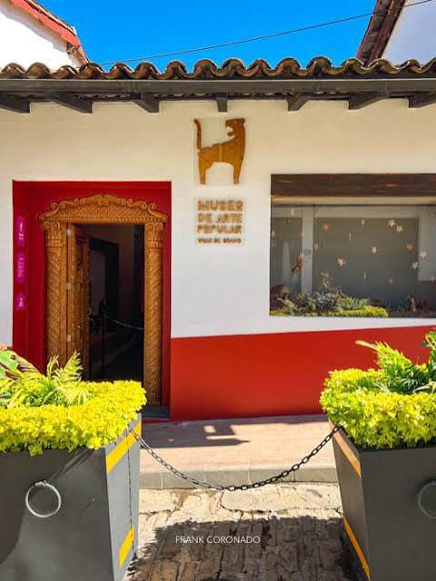
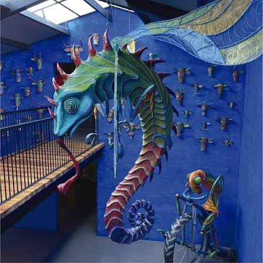

Conoce las Rutas Ecoturísticas
Museo de arte popular

La entrada conserva un estilo tradicional que representa parte de la identidad de Valle de Bravo. Sus paredes, la madera tallada y los detalles decorativos nos recuerdan el trabajo artesanal que se realiza en el municipio.
Este museo es importante porque ayuda a conservar las costumbres, las raíces de las comunidades y el trabajo de los artesanos que mantienen vivas las tradiciones de Valle de Bravo.
Arte popular

Se pueden observar figuras artesanales colgadas del techo, adornos de papel de diferentes colores y objetos decorativos elaborados a mano. Estos elementos representan la imaginación y las costumbres que se mantienen vivas en las comunidades de Valle de Bravo.
También reflejan la importancia de las artesanías en las celebraciones y en la identidad cultural de sus habitantes.
Obras

En el Museo de Artes Populares se pueden apreciar figuras de animales y criaturas fantásticas llenas de colores y detalles. Este tipo de trabajos representa la creatividad de los artesanos y la importancia que tiene el arte hecho a mano en Valle de Bravo.
También nos recuerda cómo las tradiciones se conservan a través de las figuras decorativas y las expresiones artísticas que forman parte de la cultura del municipio.